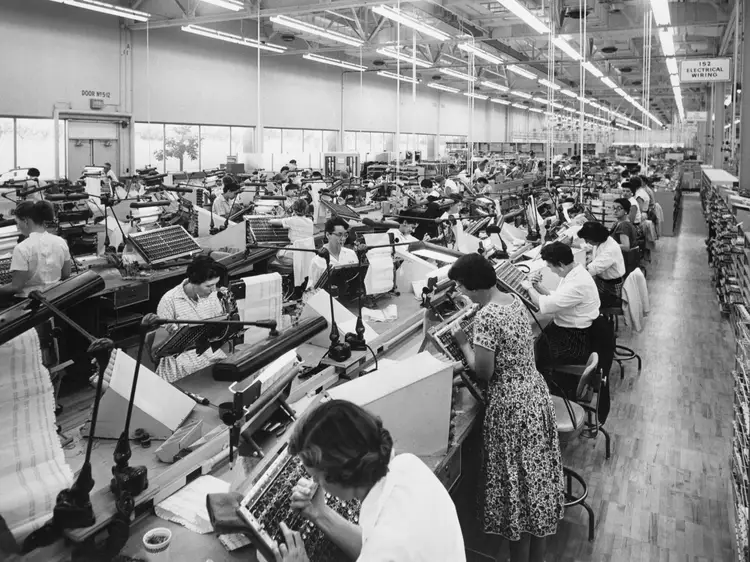

The begin
Silicon Valley first emerged on the map in the late 1930s and early 1940s. Around this time, companies like Hewlett-Packard (HP) and Stanford University began to thrive in the Silicon Valley region. During World War II, Silicon Valley became a crucial hub of innovation, particularly for military purposes.
